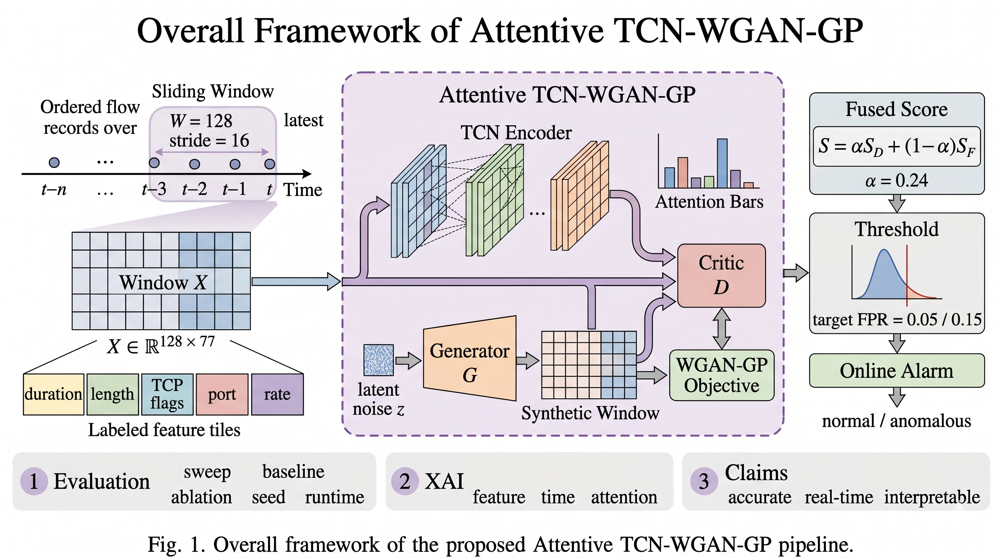
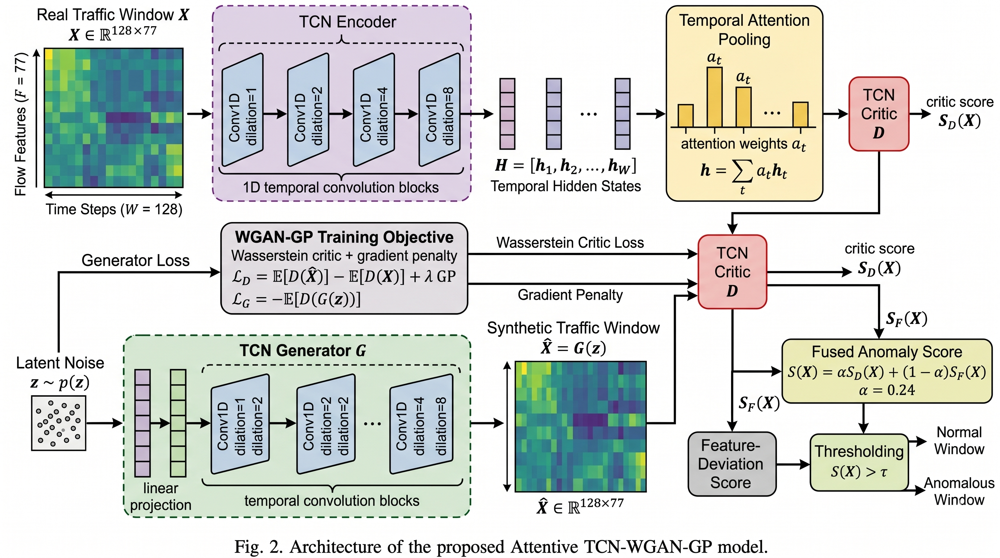
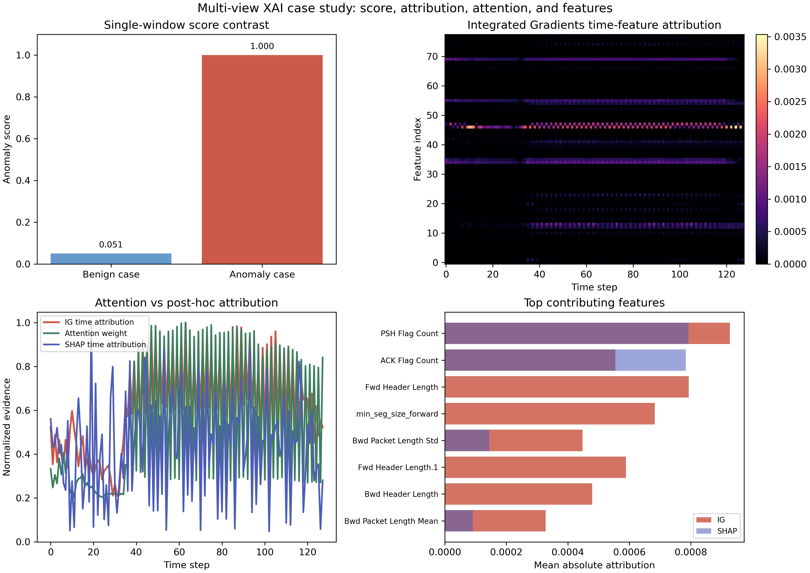

CNS 2026 投稿导向版本：低误报告警、跨数据集阈值迁移与可解释告警审计
研究定位：本文关注网络安全运营中的低噪声窗口级告警，而非单纯追求离线分类准确率，并进一步报告不同数据域下阈值迁移的有效性与局限性。
汇报人：李婕
汇报日期：2026-04-24
单条 flow 往往缺少上下文，因此将连续 flow 构造成窗口并输出 window-level alarm candidate。
真实安全运营对告警泛滥高度敏感，因此显式报告 target FPR 与 observed test FPR。
模型不仅输出 anomaly score，还需说明哪些时间步与流量特征支撑该告警。


S(X) = α SD(X) + (1-α) SF(X)
当前冻结配置：W=128，stride=16，α=0.24。
| 数据集 | 角色 | 定位 |
|---|---|---|
| CICIDS2017 | 主 benchmark | 主结果 |
| SWaT | 工业控制系统 | 强泛化验证 |
| UNSW-NB15 | 权威 IDS 数据集 | 压力测试 |
| TON_IoT | IoT/IIoT telemetry | limitation |
| Dataset | Windows | Seconds | Windows/s | MB |
|---|---|---|---|---|
| CICIDS2017 | 43897 | 10.51 | 4176.3 | 1.56 MB |
| SWaT | 1433 | 8.09 | 177.1 | 1.53 MB |
| UNSW-NB15 | 5138 | 31.48 | 163.2 | 1.46 MB |
| TON_IoT | 18743 | 70.67 | 265.2 | 1.39 MB |
| Model | AUC | AP | F1 | Recall | Test FPR |
|---|---|---|---|---|---|
| Ours | 0.9464 | 0.9351 | 0.7958 | 0.6640 | 0.0036 |
| MLP | 0.7537 | 0.7386 | 0.7438 | 0.6900 | 0.1210 |
| LSTM-AE | 0.4262 | 0.4201 | 0.5943 | 1.0000 | 1.0000 |
| LSTM-AD | 0.5867 | 0.4705 | 0.5943 | 1.0000 | 1.0000 |
| RF | 0.6623 | 0.7126 | 0.5578 | 0.4763 | 0.1695 |
| OneClassSVM | 0.8139 | 0.6506 | 0.2605 | 0.1675 | 0.0870 |
| IsolationForest | 0.3961 | 0.4525 | 0.2482 | 0.1533 | 0.0601 |
| Model | W | AUC | AP | F1 | Recall | Test FPR |
|---|---|---|---|---|---|---|
| Ours | 128 | 0.9464 | 0.9351 | 0.7958 | 0.6640 | 0.0036 |
| GANomaly | 128 | 0.7409 | 0.7706 | 0.7223 | 0.7117 | 0.1896 |
| ALoRa | 20 | 0.6936 | 0.6239 | 0.4939 | 0.3900 | 0.1374 |
| TranAD | 128 | 0.5660 | 0.5786 | 0.4919 | 0.3834 | 0.1284 |
| TimesNet | 128 | 0.3920 | 0.4233 | 0.4755 | 0.3598 | 0.1124 |
| DLinear | 128 | 0.4024 | 0.4795 | 0.4879 | 0.3695 | 0.1064 |
| Autoformer | 128 | 0.4687 | 0.5285 | 0.4985 | 0.3822 | 0.1107 |
| Anomaly Transformer | 128 | 0.5978 | 0.5069 | 0.2496 | 0.1571 | 0.0744 |
| DeepSVDD | 128 | 0.4782 | 0.4664 | 0.0291 | 0.0153 | 0.0274 |
GANomaly 在该工作点具有一定 F1，但 observed test FPR 明显更高；其余现代 baseline 在本窗口级协议下整体弱于本文模型。
现代异常检测模型并不会自动解决低误报 IDS 校准问题；在安全监测中，benign-alarm cost 必须作为一等指标。
| Model | AUC | AP | F1 | Recall | Precision | Test FPR |
|---|---|---|---|---|---|---|
| Ours | 0.9464 | 0.9351 | 0.8783 | 0.9678 | 0.8040 | 0.1729 |
| MLP | 0.7537 | 0.7386 | 0.7140 | 0.7048 | 0.7234 | 0.1974 |
| RF | 0.6623 | 0.7126 | 0.6781 | 0.7117 | 0.6476 | 0.2837 |
| OneClassSVM | 0.8139 | 0.6506 | 0.6616 | 0.5810 | 0.7682 | 0.1284 |
| GANomaly | 0.7409 | 0.7706 | 0.6585 | 0.7237 | 0.6041 | 0.3474 |
| LSTM-AE | 0.4262 | 0.4201 | 0.5943 | 1.0000 | 0.4228 | 1.0000 |
| LSTM-AD | 0.5867 | 0.4705 | 0.5943 | 1.0000 | 0.4228 | 1.0000 |
| TranAD | 0.5660 | 0.5786 | 0.4849 | 0.4181 | 0.5771 | 0.2244 |
| DLinear† | 0.4024 | 0.4795 | 0.4879 | 0.3695 | 0.7102 | 0.1064 |
| Autoformer† | 0.4687 | 0.5285 | 0.4985 | 0.3822 | 0.7166 | 0.1107 |
| IsolationForest | 0.3961 | 0.4525 | 0.3603 | 0.2450 | 0.6810 | 0.0841 |
| DeepSVDD | 0.4782 | 0.4664 | 0.3462 | 0.2419 | 0.6091 | 0.1137 |
| Model | W | AUC | AP | F1 | Recall | Precision | Test FPR |
|---|---|---|---|---|---|---|---|
| Ours | 128 | 0.9904 | 0.9977 | 0.9950 | 0.9900 | 1.0000 | 0.0000 |
| OneClassSVM | 128 | 0.9926 | 0.9982 | 0.9913 | 0.9827 | 1.0000 | 0.0000 |
| TimesNet | 128 | 0.9951 | 0.9973 | 0.9913 | 0.9837 | 0.9991 | 0.0030 |
| DLinear | 128 | 0.9945 | 0.9971 | 0.9909 | 0.9828 | 0.9993 | 0.0030 |
| Autoformer | 128 | 0.9907 | 0.9962 | 0.9909 | 0.9828 | 0.9993 | 0.0030 |
| TranAD | 128 | 0.9800 | 0.9953 | 0.9885 | 0.9800 | 0.9972 | 0.0090 |
| LSTM-AE | 128 | 0.9800 | 0.9953 | 0.9867 | 0.9800 | 0.9935 | 0.0209 |
| GANomaly | 128 | 0.9971 | 0.9993 | 0.9864 | 0.9945 | 0.9785 | 0.0716 |
| IsolationForest | 128 | 0.9861 | 0.9964 | 0.9768 | 0.9599 | 0.9943 | 0.0179 |
| ALoRa | 20 | 0.9526 | 0.9879 | 0.9559 | 0.9177 | 0.9975 | 0.0075 |
| LSTM-AD | 128 | 0.8680 | 0.9661 | 0.8988 | 0.8288 | 0.9817 | 0.0507 |
| Anomaly Transformer | 128 | 0.8661 | 0.9620 | 0.8869 | 0.8098 | 0.9803 | 0.0536 |
| DeepSVDD | 128 | 0.8485 | 0.9314 | 0.8636 | 0.9918 | 0.7647 | 1.0000 |
| Model | W | AUC | AP | F1 | Recall | Precision | Test FPR |
|---|---|---|---|---|---|---|---|
| IsolationForest | 128 | 0.8327 | 0.8430 | 0.8272 | 0.9856 | 0.7127 | 0.4926 |
| TranAD | 128 | 0.8467 | 0.8666 | 0.8178 | 0.9219 | 0.7349 | 0.4124 |
| DeepSVDD | 128 | 0.7334 | 0.7047 | 0.8177 | 0.9965 | 0.6932 | 0.5466 |
| Ours | 128 | 0.8017 | 0.7549 | 0.7928 | 0.9037 | 0.7062 | 0.4660 |
| GANomaly | 128 | 0.9703 | 0.9721 | 0.7613 | 0.9996 | 0.6147 | 0.7768 |
| LSTM-AE | 128 | 0.7964 | 0.8249 | 0.7205 | 0.7243 | 0.7168 | 0.3548 |
| OneClassSVM | 128 | 0.7576 | 0.8197 | 0.6178 | 0.5081 | 0.7879 | 0.1696 |
| TimesNet† | 128 | 0.7133 | 0.7806 | 0.2696 | 0.1579 | 0.9220 | 0.0166 |
| DLinear† | 128 | 0.7400 | 0.8003 | 0.2599 | 0.1512 | 0.8968 | 0.0153 |
| Autoformer† | 128 | 0.7963 | 0.8377 | 0.5353 | 0.3681 | 0.9855 | 0.0092 |
| LSTM-AD | 128 | 0.6723 | 0.6976 | 0.5546 | 0.4480 | 0.7280 | 0.2075 |
| Anomaly Transformer | 128 | 0.5845 | 0.6577 | 0.3684 | 0.2511 | 0.6919 | 0.1386 |
| ALoRa | 20 | 0.6892 | 0.7032 | 0.2045 | 0.1172 | 0.8030 | 0.0353 |
TON_IoT 是 telemetry-style features，和 flow/process-control traffic 的动态差异明显。
| Pooling | Loss | AUC | AP | F1 | Recall |
|---|---|---|---|---|---|
| attn | WGAN-GP | 0.9464 | 0.9351 | 0.8783 | 0.9678 |
| mean | vanilla | 0.9469 | 0.9289 | 0.8469 | 0.8940 |
| mean | WGAN-GP | 0.8253 | 0.8218 | 0.7543 | 0.7216 |
| attn | vanilla | 0.8367 | 0.6872 | 0.6891 | 0.7099 |
attention 与 WGAN-GP 的组合表现最佳，说明 temporal evidence aggregation 与 stable adversarial training 具有互补性。
attention 既不能被直接视为解释，也不是单独必然有效的组件；需要与 WGAN-GP 和 fused scoring 一并评价。
| Scenario | F1 | Recall | Precision | Test FPR |
|---|---|---|---|---|
| Clean | 0.7552 | 0.6945 | 0.8276 | 0.1447 |
| Noise 1% | 0.7596 | 0.6967 | 0.8350 | 0.1377 |
| Noise 3% | 0.7710 | 0.7047 | 0.8512 | 0.1232 |
| Noise 5% | 0.7866 | 0.7248 | 0.8598 | 0.1182 |

| Feature | Top-5 Count | Coverage | Mean Rank |
|---|---|---|---|
| PSH Flag Count | 53 | 0.828 | 1.23 |
| Flow Packets/s | 42 | 0.656 | 2.74 |
| Fwd Header Length.1 | 40 | 0.625 | 3.90 |
| min_seg_size_forward | 39 | 0.609 | 4.21 |
| Destination Port | 33 | 0.516 | 3.45 |
| 图/表 | 作用 | 主线含义 |
|---|---|---|
| Fig. 1 工作流图 | 说明整体流程 | 从 flow 到告警审计 |
| Fig. 2 模型结构图 | 说明方法 | TCN + Attention + WGAN-GP + fused score |
| Table 1 | CICIDS 低误报 | 证明低噪声告警优势 |
| Table 2 | 现代 SOTA baseline | 回应 baseline 老旧问题 |
| Table 3 | 高召回工作点 | 展示 recall/F1 trade-off |
| Table 4 | TSL supplementary | DLinear/Autoformer 覆盖补强 |
| Table 5-6 | SWaT / UNSW | 泛化验证与阈值迁移压力测试 |
| Table 7 | Ablation | 证明组件贡献 |
| Table 8 | Runtime efficiency | operational feasibility |
| Table 9 | Noise robustness | 轻量 sanity check |
| Fig. 3 + Table 10 | XAI | 单样本审计 + 跨窗口稳定性 |
本文面向 low-noise network security monitoring，而非普通 offline classification。检测器输出 window-level alarm candidates，在 explicit FPR budget 下校准阈值，并通过 XAI 支持 analyst triage。
Attentive TCN-WGAN-GP 将时序建模、稳定对抗训练、融合评分和 XAI 审计组合到窗口级 IDS 中。
CICIDS2017 低误报结果强；SWaT 结果很强；UNSW 保持竞争力；TON_IoT 暴露跨域限制。
面向 IEEE CNS 2026，强调低噪声告警、阈值迁移、部署可行性与告警审计。
欢迎提问与讨论
Q & A
重点可讨论：UNSW 如何解释、TON_IoT 是否保留、CNS 投稿叙事、XAI 是否足够、是否还需补充 artifact。